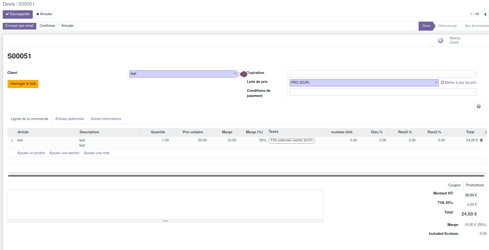

<section class="oe_container oe_dark">
    <div class="oe_row oe_spaced">
        <div class="oe_span12 oe_spaced">
            <h2 class="oe_slogan">Editable margins in Sales Orders</h2>
        </div>

        <div class="oe_span4">
            <p class="oe_mt32">
                This module give you the possibilite to edit margin in euro and margin in %. </p>
            <p>
                This gives the profitability by calculating the difference between the Unit
                Price and Cost Price. </p>
        </div>

        <div class="oe_span4">
            <p class="oe_mt32">
                Unit price, total price, discount and tva will be recalculated .
            </p>
        </div>
        <br/><br/><br/>
        <div class="oe_span8 oe_centered">
            <div class="oe_row_img oe_centered">
                
            </div>
        </div>
        <br/><br/><br/>


    </div>
</section>


